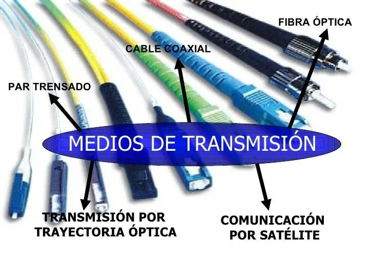

Medios de Transmisión

¿Qué son los Medios de Transmisión?
Los medios de transmisión son los canales físicos o lógicos a través de los cuales se transmiten las señales de información desde el emisor hasta el receptor. Estos pueden ser cableados o inalámbricos y varían en sus características dependiendo de la tecnología utilizada.
Más información sobre Medios de TransmisiónTipos de Medios de Transmisión
Existen varios tipos de medios de transmisión, que se pueden clasificar en dos grandes categorías:
- Medios Guiados: Son aquellos en los que la señal viaja a través de un conductor físico. Algunos ejemplos son:
- Cables de cobre: Como el cable coaxial y el par trenzado. Ver más sobre cable coaxial
- Cable de fibra óptica: Utiliza luz para transmitir información a altas velocidades. Aprender más sobre la fibra óptica
- Medios No Guiados: La señal viaja a través del aire o el espacio, sin necesidad de un conductor físico. Ejemplos incluyen:
- Radiofrecuencia (RF): Utilizado para comunicaciones inalámbricas, como Wi-Fi y radio.
- Microondas: Utilizadas en enlaces de comunicación a larga distancia. Conocer más sobre microondas
- Infrarrojos: Utilizados en aplicaciones a corto alcance como controles remotos. Más detalles sobre infrarrojos
Comparación entre Medios Guiados y No Guiados
Los medios guiados son más seguros y tienen menos interferencias, pero pueden ser costosos y difíciles de instalar. Los medios no guiados, por otro lado, son más flexibles y baratos, pero pueden estar sujetos a interferencias y limitaciones de alcance.
 Video comparación de medios de transmisión
Video comparación de medios de transmisión
Video Explicativo
Observa este video para obtener una explicación más completa sobre los medios de transmisión:
Video adicional sobre medios de transmisión